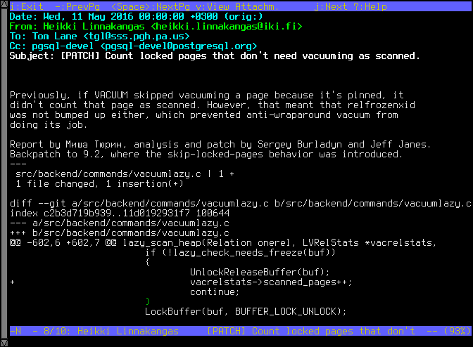

Gitomail¶
Gitomail is a tool for generating pretty inline-HTML emails for Git commits, with a sending capability to proper recipients.
This page provides a short introduction to Gitomail's main features.
First, some history¶
Many years before Git became popular or existed, people were using mailing lists in order to collaborate on code changes. The unified diff format, now popularized, as used as a diff format in the Plain Text-formatted emails. A text-based console email program such as mutt presented the user a convinent way to handle these diffs and import them into their source trees.
Below is a fake example of such an email, based on a commit in the PostgreSQL project:
 (shown here above, a screenshot from an old email reader)
With the advant of sites like Github, email became under-used for reviewing changes, and in the Webmail era, emails containing diffs may appear somewhat arcane to developers of today.
Diffs in the age of Webmail¶
Nowadays, the Plain Text version of the email message seems outdated. This is where Gitomail comes into the picture.
For example, the email from above, when sent by Gitomail, can appear like the following:

Combined with full syntax highlighting, the HTML part of the email makes this appearance possible.
Inline reply friendliness¶
Similarly to Plain Text emails, it's possible to reply to changes inline:
Branch change summaries¶
Gitomail tracks changes to branches, and can describe what changed, dealing properly with fast-forward and rebases. It's possible to specify how branches relate to each so that summaries make sense.
Fast forward example¶

Rebase example¶
Automatic recipients and code maintainership¶
Of course, it is not enough to format the emails. We would also like to designate their recipients, preferrably in an automated way.
Inspired by a very wonderful script in the Linux kernel source tree named get_maintainers.pl, Gitomail supports its own Maintainers file format, which can specify rules to match people to certain files or directories.
maintainer dan file.*
maintainer jack Makefile
reviewer mailinglist
Using a very minimal specification language, and formatted similarly to .gitignore, these Maintainers files can optionally spread across the source tree, assigning code to maintainers. It's especially useful for single repositories bearing multiple maintainers of code. These files are then used to automatically set the destination address of emails to the rightful maintainers, based on the code changed in the commit, effectively working very similarly to get_maintainers.pl.